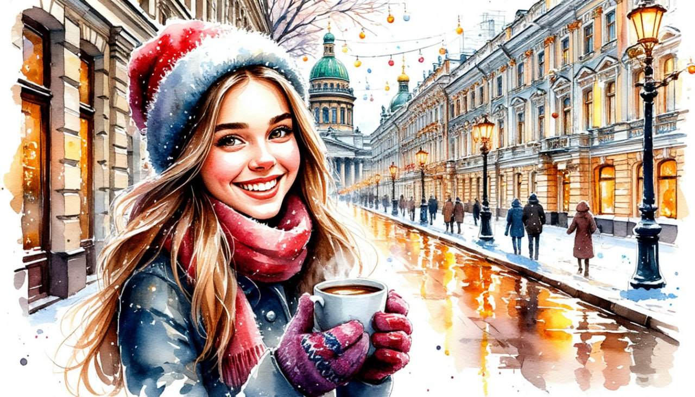

Праздник Рождества в Санкт-Петербурге. Тур комфорт

Даты тура:
со 2 января 2027 года (сб) по 6 января 2027 года (ср)с 3 января 2027 года (вс) по 7 января 2027 года (чт)
Стоимость тура:
- 26 600 р. - взрослый
- 26 600 р. - пенсионеры/студенты/школьники
- 33 600 р./чел - одноместное размещение
По программе:
- - Вечерняя экскурсия по новогоднему городу
- - Юсуповский дворец* (за доп.плату)
- - Царское село и Янтарная комната* (за доп.плату)
- - Экскурсия на Дворцовую площадь
- - Территория Петропавловской крепости
- - Посещение Рождественской ярмарки
Программа тура:
1 день: ОТПРАВЛЕНИЕ
- 17-00- выезд из Костромы от ТРЦ "РИО"
2 день: САНКТ-ПЕТЕРБУРГ
- Прибытие в Санкт-Петербург.
- Завтрак в кафе города.
- Обзорная автобусная экскурсия по Санкт-Петербургу. Наша зимняя петербургская сказка открывается автобусной обзорной экскурсией «Новогодний Санкт-Петербург» с осмотром парадного центра города. Все самые знаменитые достопримечательности и невероятные «открыточные виды» сказочного города!
- От Невского проспекта начинается самый удивительный город Земли. Аничков мост - один из символов города, Екатерининский сад перед знаменитой «Александринкой», Публичная библиотека, Гостиный двор, канал Грибоедова, с живописными видами на Казанский собор и перспективой на Адмиралтейство, Марсово поле... Вы увидите грандиозный Исаакиевский собор, уступающий своими размерами только трем соборам в мире – соборам Святого Петра в Риме, Св. Павла в Лондоне и Св. Марии во Флоренции. Вы полюбуетесь величественными архитектурными ансамблями Дворцовой и Сенатской площадей.
- Посещение Казанского собора
- Экскурсия по территории Петропавловской крепости Петропавловскую крепость по праву называют «сердцем» Санкт-Петербурга, ведь именно с ее закладки и началась история нашего города в начале XVIII века. В первые годы существования фортеции территория внутри крепостных стен, по сути, и являлась самим городом. И хотя впоследствии Санкт-Петербург далеко шагнул за стены крепости, но внутри все осталось неизменным. В ходе экскурсии по территории крепости Вы пройдете по одной из первых улиц города, увидите триумфальные ворота и главную Соборную площадь.
- Посещение Рождественской ярмарки. Приобрести подарки, сладости, познакомиться с кухней других стран и отведать традиционный согревающий напиток из горячего красного вина и ароматных специй – глинтвейн.
- Обед в кафе
- Заселение в гостиницу*
- * River Palace Hotel – изысканный бизнес-отель
- Свободное время.
3 день: САНКТ-ПЕТЕРБУРГ
- Завтрак в отеле «шведский стол»
- Свободное время в городе ИЛИ
за дополнительную плату (по желанию) СТРОГО ПРИ БРОНИРОВАНИИ ТУРА
- Экскурсия «Парадные залы» в Юсуповском дворце. - Юсуповский дворец на Мойке – это бывшая фамильная резиденция пяти поколений князей Юсуповых в Санкт-Петербурге. Особняк часто называют «энциклопедией аристократического интерьера»: его внутренняя отделка, почти полностью сохранившаяся с дореволюционных времен, отражает безупречный вкус и неограниченные финансовые возможности прежних владельцев. Здесь все создавалось для уютной семейной жизни и блистательных балов, которыми так славилась Северная столица.
- Стоимость: 1 300 р./чел
- 17-00 ДЛЯ ВСЕХ ( входит в стоимость тура) Вечерняя экскурсия по Санкт-Петербургу. Мы отправимся по ярко освещенному, нарядному Невскому проспекту. Каждый год к Новому году он преображается, меняется тематика его украшений, фасады зданий украшают праздничные гирлянды и мерцающие волшебным светом инсталляции. Потом прогуляемся по Семимостью. Оттуда открывается вид на семь мостов, и по легенде, загаданное там желание непременно сбудется. В этом удивительном месте вас встретит светящая фигура Ангела — с ним получаются особенно волшебные фотографии. Великолепная, новогодняя атмосфера города на Неве покорит вас миллионами огней иллюминации! Вы попадете в настоящую Новогоднюю сказку и пополните свой фотоальбом самыми зимними, самыми новогодними, самыми волшебными фотографиями! Во время экскурсии вы увидите фантастический наряд зимнего Петербурга. Самые великолепные места города – Дворцовую и Исаакиевскую площади, Невский проспект, Никольский и Троицкий соборы и многое другое.
- Увидите самую главную новогоднюю красавицу на Дворцовой площади и множество пушистых елочек на Исаакиевской площади, где развернулся целый "новогодний сад".
- Посещение новогодней ярмарки на Манежной площади
- Приглашаем вас прикоснуться к настоящей зимней сказке в самом центре Петербурга: на ярмарке вас ждут аттракционы, карусели, авторские ёлочные игрушки, изделия ручной работы и сувениры с символикой Санкт-Петербурга, уютные шарфы, варежки и множество других памятных вещей.
- Мерцание огней, веселая музыка, аромат глинтвейна и расписных пряников...
- Сделайте яркие памятные фотографии на фоне праздничных декораций и новогодней ел
- Возвращение в отель.
- Свободное время
4 день: ЦАРСКОЕ СЕЛО
- Завтрак в отеле «шведский стол»
- Загородная экскурсия в Царское Село «Жемчужина галантного века».
- Проехав 25 км по старой Царскосельской дороге, Вы примерно через час окажетесь в блистательном мире бывшей официальной резиденции русских императоров – Царском Селе. В ходе экскурсии Вы узнаете, когда появился этот пригород Санкт-Петербурга, какие события с ним связаны и почему его часто называют «город муз». Особую известность Царскому Селу принес роскошный и неповторимый Екатерининский дворец.
-
За дополнительную плату (по желанию) СТРОГО ПРИ БРОНИРОВАНИИ ТУРА:
экскурсия в Екатерининский дворец. Стоимость: взрослые – 1 600 р., пенсионеры - 950 р., дети с 14 до 18 лет – 950 р., дети с 7 до 14 лет – 650 р., дети с 0 до 7 лет - бесплатно Студенты очных факультетов при наличии студенческого билета - 950 р. - ВНИМАНИЕ! Участники специальной военной операции, члены семьи участников специальной военной операции – БЕСПЛАТНО.
- Одна из самых блистательных резиденций династии Романовых, в которой сохранились интерьеры середины XVIII века, выполненные в стиле «русского барокко». «Золотая анфилада» залов Екатерининского дворца, созданная архитектором Растрелли, была задумана, чтобы поразить любого своим богатством и пышностью. «Янтарная комната», входящая в Золотую анфиладу, приумножила славу Екатерининского дворца.
- Выезд из Санкт-Петербурга
5 день: ПРИБЫТИЕ ДОМОЙ
Прибытие в Кострому в первой половине дня (ориентировочно)
В стоимость тура входит:
- - проживание в гостинице*
- * River Palace Hotel – изысканный бизнес-отель (Номер реестровой записи: С782024005857)
- - питание: 3 завтрака + 2 обеда
- - услуги гида-экскурсовода
- - экскурсионная программа
- - автобусное обслуживание по программе тура
Дополнительно оплачиваются (по желанию) СТРОГО ПРИ БРОНИРОВАНИИ ТУРА:
- - Экскурсия в Юсуповский дворец. Стоимость: 1 300 р./чел (все категории)
- - Экскурсия в Екатерининский дворец. Стоимость: взрослые – 1 600 р., пенсионеры - 950 р., дети с 14 до 18 лет – 950 р., дети с 7 до 14 лет – 650 р., дети с 0 до 7 лет - бесплатно. Студенты очных факультетов при наличии студенческого билета - 950 р.
- ВНИМАНИЕ! Участники специальной военной операции, члены семьи участников специальной военной операции – БЕСПЛАТНО.
- Для бронирования необходимы данные паспорта РФ и свидетельства о рождении, если с вами путешествуют дети
- Предоплата – 50% от стоимости тура. Остаток за 30 дней до даты выезда.
- Любой тур можно оформить не выходя из дома. Подробнее: Тут
Стоимость тура не зафиксированы и могут быть изменены в большую или меньшую сторону в зависимости от уровня спроса в любой момент.
Время начала экскурсий и их порядок указано ориентировочно.
Фирма-исполнитель оставляет за собой право замены экскурсий без уменьшения общего объема экскурсионной программы.
По вопросам бронирования обращайтесь: